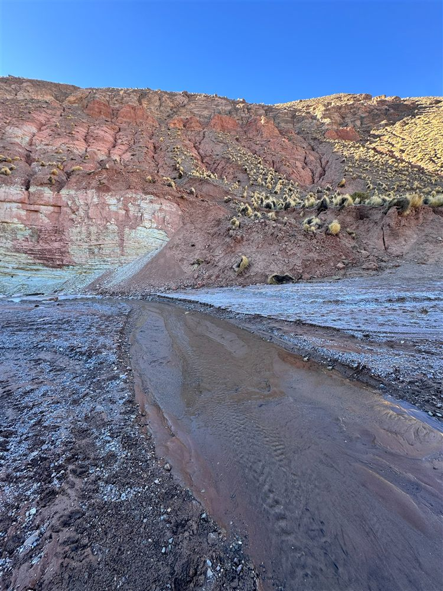

Permisos
Marzo 2026
Permisos ambientales: qué mirar antes de invertir en un proyecto minero
Los tiempos y requisitos de un permiso ambiental pueden definir la viabilidad financiera de un proyecto. Repasamos los puntos que un inversor debería revisar primero.
Leer nota